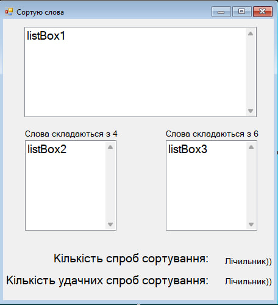
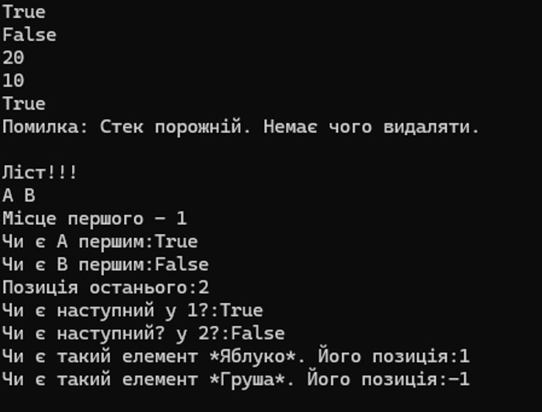

Опис проєкту 1:
Лабораторна робота № 11
Цей C#-код реалізує програму для сортування слів за їхньою довжиною за
допомогою механізму Drag-and-Drop в Windows Forms.
Ось готовий опис роботи та алгоритму програми українською мовою для
звіту або захисту лабораторної роботи:
Мета роботи:
Розробка графічного застосунку на C# (Windows Forms) для інтерактивного
сортування слів за допомогою механізму Drag-and-Drop відповідно до
завдання Варіанту 2.
Алгоритм та логіка роботи програми:
Зчитування даних: При запуску програми з текстового файлу 123.txt
зчитується список слів і завантажується в початковий список listBox1.
Захоплення елемента (Drag): Реалізовано обробку подій миші (MouseDown,
MouseMove). Коли користувач затискає ліву клавішу миші на слові та
переміщує вказівник більше ніж на 5 пікселів, запускається процес
перетягування (DoDragDrop).
Критерії сортування (Варіант 2):
Критерій 1 (listBox2): Дозволяє перетягувати тільки слова, що
складаються з 4 букв (s.Length == 4).
Критерій 2 (listBox3): Дозволяє перетягувати тільки слова, що
складаються з 6 букв (s.Length == 6).
Підрахунок статистики:
Змінна sp (label4) фіксує загальну кількість спроб перетягування.
Змінна tsp (label3) фіксує кількість вдало відсортованих слів
(коректних переміщень).
Сортування та очищення: Якщо слово відповідає критерію, воно додається
до обраного списку, а з початкового списку вилучається. Якщо ні — дія
скасовується.

Інтерфейс програми
Опис проєкту 2:
Лабораторна робота № 3
Тема: Реалізація АТД лінійних структур даних.
Мета: Реалізувати абстрактні типи даних (АТД) за допомогою
об'єктно-орієнтованого підходу та використати відповідні фізичні
структури для кожного АТД.
Програмне забезпечення: Windows 11, Visual Studio 2022
Апаратне забезпечення: AMD Ryzen 5 2600
Завдання
Реалізувати АТД у вигляді абстрактного класу чи інтерфейсу:
Вхідні данні: АТД відповідно до варіанту лабораторної.
Результат: абстрактний клас чи інтерфейс.
Створити клас, який успадковує абстрактний клас чи інтерфейс, що був
описаний у першому кроці. Цей клас буде представляти конкретну
реалізацію АТД за варіантом лабораторної роботи:
Вхідні данні: АТД відповідно до варіанту лабораторної, абстрактний
клас чи інтерфейс, варіант реалізації відповідно до варіанту
лабораторної.
Результат: вихідний код класу чи класів, що реалізують конкретну
структуру даних.
Протестувати отриману структуру даних. Можливі два варіанти:
Реалізувати інтерактивний чи фіксований тестовий сценарій у основній
чи допоміжній функції програми.
Реалізувати модульні тести, що перевіряють роботу кожного метода
структури.
Мій варіант: Стек
Рішення Стек
Інтерфейс
public interface IStack
{
void Put(T element);
void Remove();
T Pop();
bool Empty();
}
Клас
class NodeT
{
public T data;
public NodeT next;
}
class StackT: IStackT
private NodeT top;
public Stack()
{
top = null;
}
public void Put(T element)
{
NodeT temp = new NodeT();
temp.next = top;
top = temp;
temp.data = element;
}
public void Remove()
{
try
{
if (top == null)
{
throw new InvalidOperationException("Стек порожній. Немає чого видаляти.");
}
top = top.next;
}
catch (Exception ex)
{
Console.WriteLine($"Помилка: {ex.Message}");
}
}
public T Pop()
{
try
{
if (top == null)
{
throw new InvalidOperationException("Стек порожній. Немає чого видаляти.");
}
T temp = top.data;
top = top.next;
return temp;
}
catch (Exception ex)
{
Console.WriteLine($"Помилка: {ex.Message}");
return default;
}
}
public bool Empty()
{
if(top == null)
{
return true;
}
else { return false;}
}
Вигляд функції Main для тестування алгоритмів:
static void Main(string[] args)
{
Console.InputEncoding = System.Text.Encoding.UTF8;
Console.OutputEncoding = System.Text.Encoding.UTF8;
#region
var stack = new Stackint();
Console.WriteLine(stack.Empty());
stack.Put(10);
Console.WriteLine(stack.Empty());
stack.Put(20);
Console.WriteLine(stack.Pop());
stack.Put(20);
stack.Remove();
Console.WriteLine(stack.Pop());
var s = new Stackint();
Console.WriteLine(s.Empty());
s.Pop();
#endregion
Console.WriteLine("\nЛіст!!!");
var list = new Liststring();
list.Put("A");
list.Put("B");
for (int i = 1; i <= list.count; i++)
{
Console.Write($"{ list.Item(i)} ");
}
var j = new Listint();
Console.WriteLine($"\nМісце першого - {list.First()}");
Console.WriteLine($"Чи є A першим:{list.IsFirst(1)}");
Console.WriteLine($"Чи є B першим:{list.IsFirst(2)}");
Console.WriteLine($"Позиція останього:{list.Last()}");
Console.WriteLine($"Чи є наступний у 1?:{list.HasNext(1)}");
Console.WriteLine($"Чи є наступний? у 2?:{list.HasNext(2)}");
var g = new Liststring();
g.Put("Яблуко");
g.Put("Банан");
Console.WriteLine($"Чи є такий елемент *Яблуко*. Його позиція:{g.Find("Яблуко")}");
Console.WriteLine($"Чи є такий елемент *Груша*. Його позиція:{g.Find("Груша")}");
var a = new Listint();
a.Put(10);
a.Put(20);
a.Put(30);
Console.WriteLine("\nЛіст!!!");
for (int i = 1; i <= a.count; i++)
{
Console.Write($"{a.Item(i)} ");
}
Console.WriteLine();
Console.WriteLine($"Кількість елементів:{a.count}");
a.Remove(2);
Console.WriteLine($"Кількість елементів після a.Remove(2):{a.count}");
Console.WriteLine($"1 елемент:{a.Item(1)}");
Console.WriteLine($"2 елемент:{a.Item(2)}");
Console.WriteLine($"3 елемент:{a.Item(3)}");}
}

Успішне завершення виконання програми
Опис проєкту 3:
У цій лабораторній роботі реалізовано графічний застосунок C# (Windows
Forms) за Варіантом 2, який моделює розрахунок параметрів кінематики
точки та демонструє базові принципи візуального програмування.
Мета роботи:
Розробка інтерактивного графічного застосунку на C# (Windows Forms) для
розрахунку та відображення параметрів кінематики точки відповідно до
завдання Варіанту 2.
Завантажити Visual Studio 2026
Ознайомлення з основними елементами управління C# Windows Forms, їхніми
властивостями та обробкою подій для створення інтерактивного
користувацького інтерфейсу.
Основний функціонал та реалізація:
Налаштування інтерфейсу:
Заголовок форми змінено на «Кінематика точки», а її розміри
зафіксовано (заборонено зміну розміру вікна).
Встановлено кастомне тло форми, а колір фону міток (Label)
підлаштовано під колір форми.
Текст із формулами закону руху (x = b * cos(at), y = b * sin(at))
відцентровано та встановлено кастомний шрифт.
Динамічний розрахунок та введення даних:
Введення значення констант $a$ та $b$ здійснюється за допомогою
елементів горизонтальної прокрутки (HScrollBar). Пряме введення
тексту користувачем у поля виводу заборонено (ReadOnly = true).
При зміні положення повзунків формули та розраховані значення
швидкості (a * b) та прискорення (a^2 * b$) автоматично й
безперервно оновлюються.
Управління видимістю та вихід:
Текстові поля для виводу швидкості та прискорення початково є
прихованими (Visible = false).
Кнопки «Швидкість» та «Прискорення» працюють як перемикачі: перше
клацання робить відповідне поле видимим, повторне — приховує його.
Натискання на кнопку «EXIT» викликає закриття програми
(Application.Exit() або Close()).